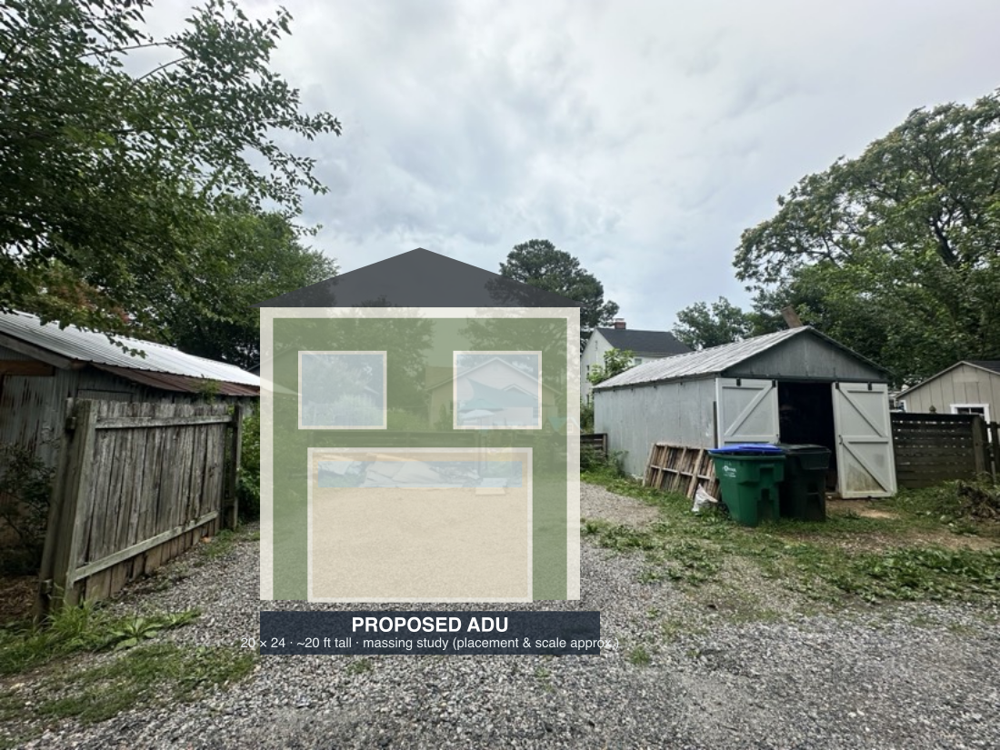
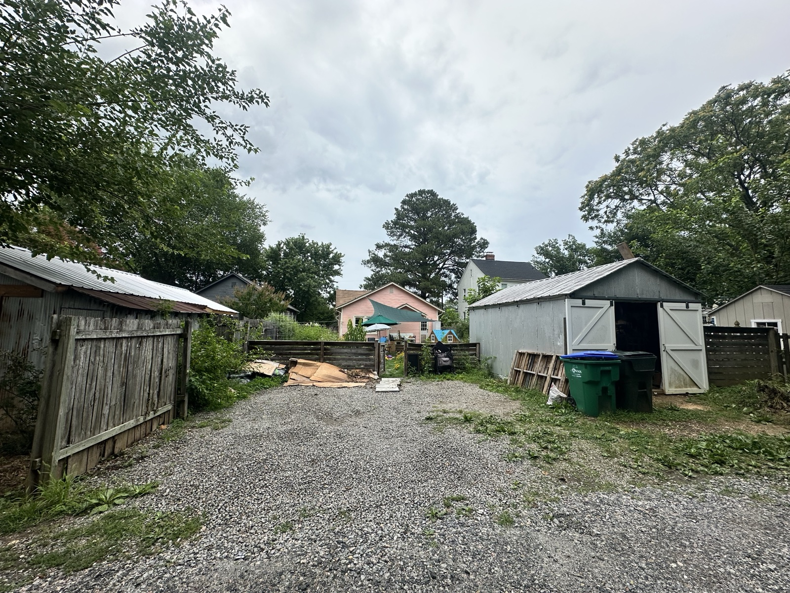
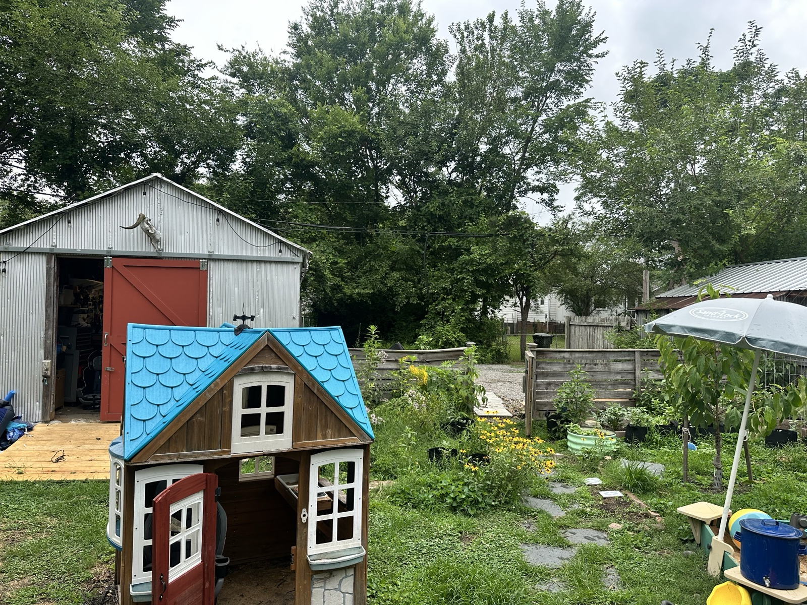
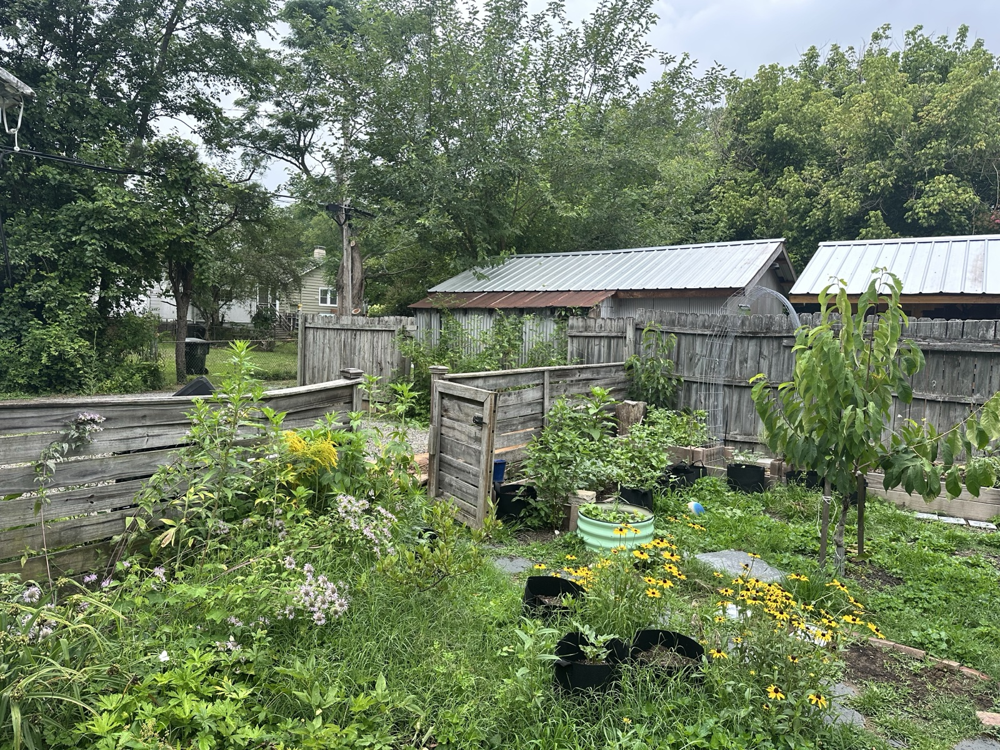
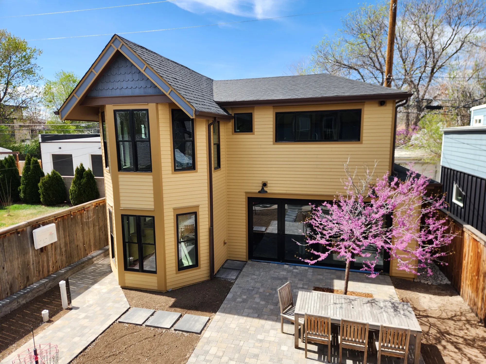
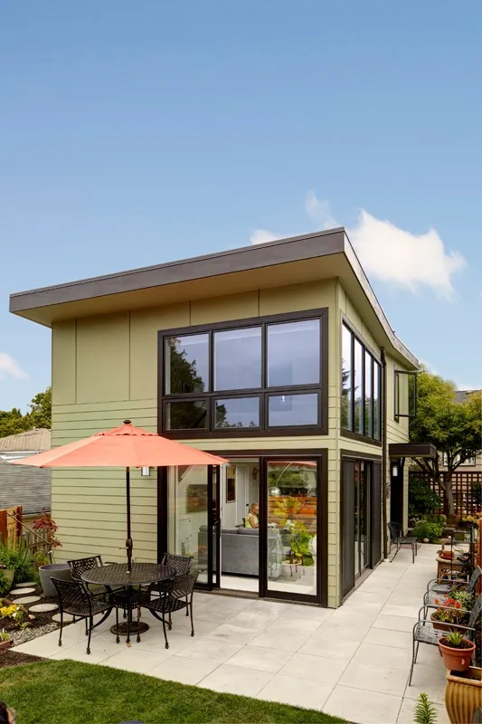

Preferred scheme
A 20 x 24 ft building, garage door facing the alley, with approximately 480 sf of living space above.
Architect concept brief / August 2026
Early design material for a detached accessory dwelling unit behind a 1931 Craftsman bungalow in Richmond, Virginia.

01 / The brief
Rudimentary plans and elevations that test whether this idea works spatially, structurally, and in its setting.
A 20 x 24 ft building, garage door facing the alley, with approximately 480 sf of living space above.
An 18 x 24 ft version using a full 5 ft north setback, so we can compare the by-right-safe footprint.
Best stair location, garage/office flexibility, window placement, roof form, and a comfortable one-bedroom plan.
Goal: a modest building that feels like it belongs behind the existing house - not a miniature apartment block dropped into the yard.
02 / Site + placement
The proposed ADU sits immediately north of the existing shed. Garage access comes from the rear alley.
 Click to open full PDF
Click to open full PDF
03 / Program
These are design intentions, not fixed room dimensions. We want the plan to reveal the right tradeoffs.
Ground floor
Upper floor
Can a parked car and office coexist? Is the stair better inside or outside? Where can windows capture light without looking directly into neighboring yards?
04 / Design direction
Primary direction: complement the 1931 bungalow through proportion and details without copying it literally.

05 / Existing context
The shed is intended to remain. Fences, trees, overhead lines, grade, and exact clearances need an on-site check.



06 / Inspiration
Craftsman-traditional is the current favorite. A restrained contemporary scheme remains interesting if it produces a materially better plan.





07 / Constraints + unknowns
They should inform early concepts, but none needs to prevent a first sketch.
Plan currently shows 3 ft. R-5 ordinarily requires 5 ft. A narrow-lot provision may change the calculation, but applicability to this detached ADU needs written zoning confirmation.
No boundary or topographic survey yet. Front setback and structure locations come from owner measurements, aerial imagery, and tax records.
Owner measurement is 12 x 18 ft; assessor record says 18 x 20 ft / 360 sf. Field-verify because it affects coverage calculations.
Richmond requires access from the street or rear alley. Confirm alley width, garage maneuvering, building separation, and any fire-rated walls or opening limitations.
Locate water, sewer, electric service, overhead lines, trees, drainage, grade, and easements before design development.
Keep ADU living area at or below 500 sf and accessory-building height at or below 20 ft under the current rules. Verify how the stair and roof are measured.
Richmond's zoning rewrite remains in draft. Confirm current requirements with Zoning Administration before relying on any concept for permitting.
08 / Source files
Start with the site plan. Open the supporting records only when you need to verify where a number came from.
The useful first deliverable
Enough to compare the 18 ft and 20 ft schemes, understand the stair and roof, and decide whether to proceed to survey, zoning confirmation, and design development.
Share this brief